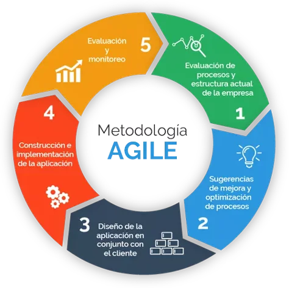
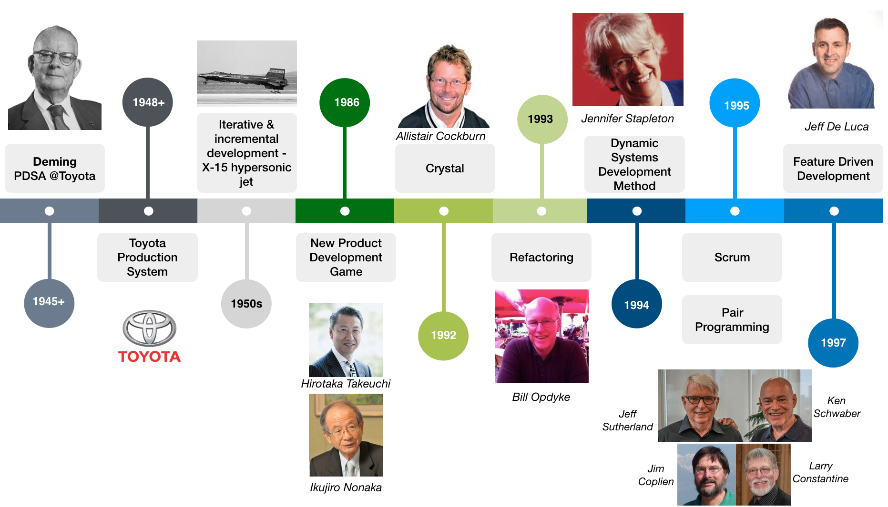
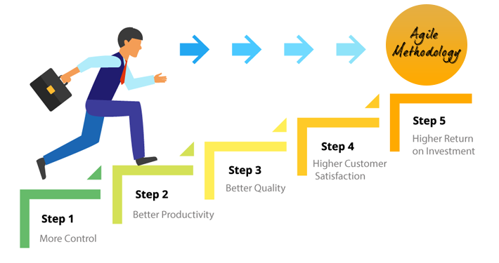
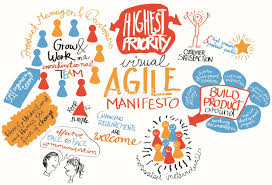

| ¿Qué es el manifesto ágil? | |
| El Manifiesto Ágil es un documento que fue redactado en febrero de 2001 por un grupo de expertos en desarrollo de software, con el objetivo de establecer una serie de valores y principios para guiar el desarrollo de software de manera ágil. El Manifiesto Ágil ha tenido un gran impacto en el desarrollo de software y ha dado lugar a una serie de metodologías y prácticas ágiles, como Scrum, Kanban y Extreme Programming. |  |
| ¿Quienes crearon el manifiesto ágil? | |
Hubo múltiples personas involucradas en la creación del manifiesto ágil.
|
 |
| ¿Cuáles son los principios del manifiesto? | |
|
 |
| ¿Por qué consideran que el manifiesto se volvió importante? | |
| Es importante por que estableció los valores y reglas para el desarrollo de software en entornos complejos y muy volatiles. También revoluciono la cultura del trabajo en la industria al fomentar la cooperación a la par que traía consigo la calidad del producto y la satisfacción del cliente como metas principales. |  |
| Ventajas del manifiesto | |
|
|
| Desventajas del manifiesto | |
|
|
| Ejemplos del manifiesto ágil | |
| Un ejemplo del manifiesto ágil en la práctica puede ser el desarrollo de una aplicación móvil para una empresa de servicios financieros, y supongamos que el objetivo del proyecto es proporcionar a los clientes una forma fácil y conveniente de acceder a sus cuentas y realizar transacciones bancarias. El equipo se enfocaría en los cuatro valores fundamentales del manifiesto ágil, como el de individuos e interacciones sobre procesos y herramientas, ya que el equipo se centraría en la comunicación y la colaboración entre los miembros del equipo. También en el software funcionando sobre documentación exhaustiva, debido a que el equipo se centraría en la entrega temprana y continua de software funcional. Por último también se enfocarían en la colaboración con el cliente sobre negociación de contratos y en la respuesta al cambio sobre seguir un plan, ya que el equipo trabajaría en estrecha colaboración con el cliente para satisfacer sus necesidades, y además, el equipo estaría abierto a los cambios en los requisitos del proyecto y podría adaptarse rápidamente. |